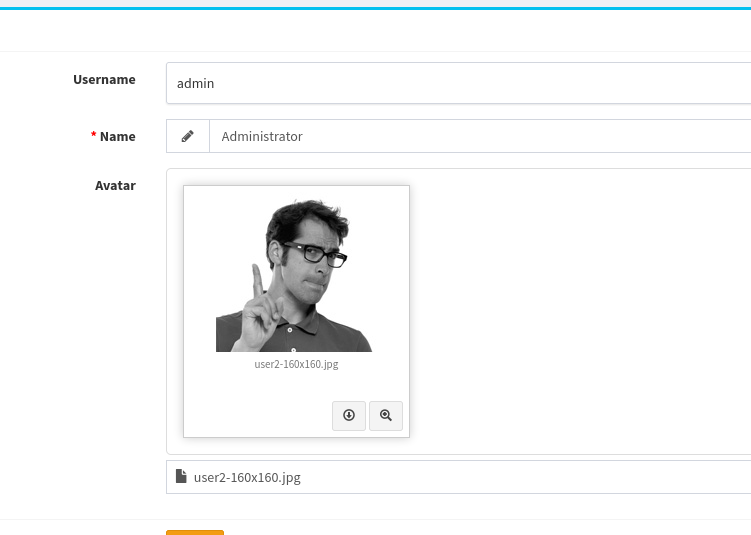
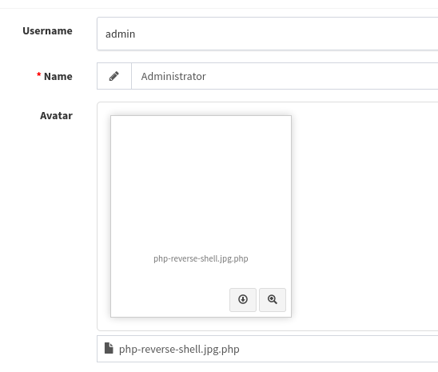
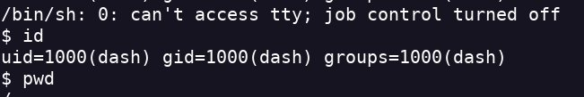
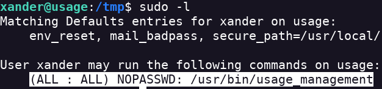
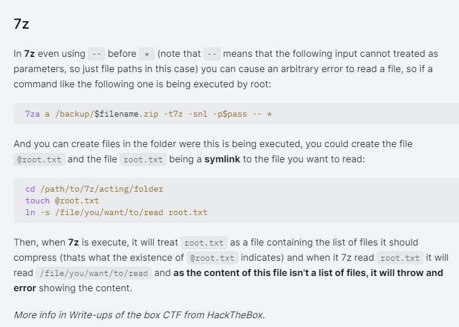

The process started with a full TCP port scan to identify exposed services on the target host.
nmap -sV -sC -p- --open 10.10.11.18 -oN scan.txtThe scan revealed two open services: SSH and HTTP.
The web application was analyzed and a login page was identified.
On the top-right corner of the page, an admin button was present. Clicking it redirected to the subdomain admin.usage.htb.
Both the main domain and the admin subdomain were added to the /etc/hosts file.
Accessing the admin subdomain displayed an administrative login page.
Standard credentials did not work, so further testing was required.
When interacting with the /forget-password endpoint, submitting an email address returned a message indicating it was not found, suggesting that the backend might be processing SQL queries.
An initial SQL injection test using sqlmap did not return results.
After running sqlmap again with adjusted parameters, a SQL injection vulnerability was successfully identified.
As a result, a password hash was extracted.
hashcat -m 3200 hash /usr/share/wordlists/rockyou.txtThe hash was cracked, revealing valid credentials: admin:whatever1.
Using these credentials, access to http://admin.usage.htb/ was obtained.
After reviewing the admin panel, the only available file upload functionality was found in the profile picture update feature.
The upload mechanism appeared to have weak validation, allowing a PHP file disguised with a .jpg extension to be uploaded, corresponding to CVE-2023-24249.

The image file was initially uploaded with a .jpg extension, and the request was intercepted using Burp Suite.
During interception, the file extension was modified from .jpg to .php, bypassing the file type restriction.

The upload path of the script was identified using the download functionality.
Executing the uploaded PHP file resulted in a reverse shell on the target system.

Once inside the system, a user named xander was identified.
The next objective was to pivot from the initial foothold to the xander user and then escalate privileges to root.
While exploring the home directory of the user dash, several hidden files were discovered.
One of these files, .monitrc, contained a plaintext password.
This password corresponded to a local user account.
Using these credentials, SSH access as the user xander was successfully established.
With access as xander, sudo privileges were enumerated to identify possible escalation paths.

The output showed that the usage_management script could be executed with elevated privileges.
Inspecting the script revealed that it used 7zip to archive files from /var/www/html and store the output in /var/backups.
By navigating to /var/www/html and abusing the wildcard handling behavior of 7zip, it was possible to manipulate the archive process.
This wildcard abuse led to command execution with root privileges.
